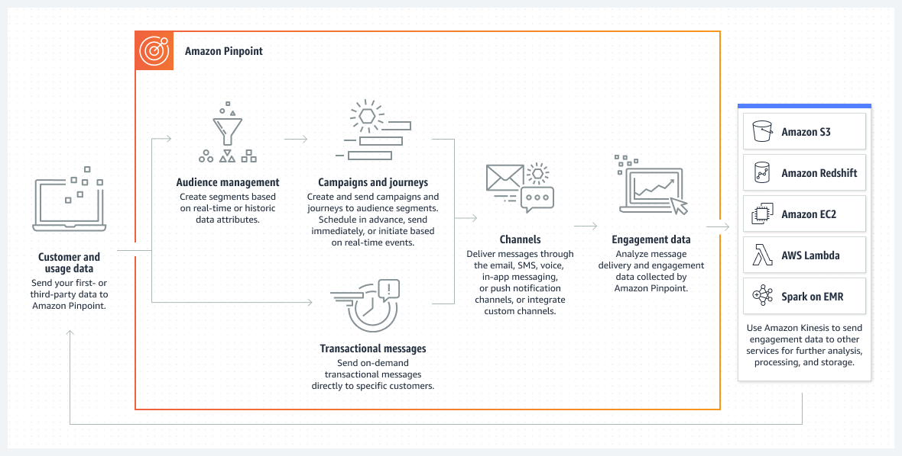

Beschreibung
Amazon Pinpoint ist ein vielseitiger Dienst von AWS, der Vermarktern und Entwicklern die Möglichkeit bietet, maßgeschneiderte Interaktionserlebnisse für ihre Kunden zu gestalten und das Benutzerengagement zu steigern. Hier sind einige wesentliche Merkmale und Funktionen von Amazon Pinpoint:
Amazon Pinpoint ermöglicht es Unternehmen, Kundeninteraktionen zu personalisieren und auf ihre Bedürfnisse zuzuschneiden, indem es umfassende Einblicke in das Nutzerverhalten liefert.
Durch die Nutzung verschiedener Kanäle wie E-Mail, SMS und mobile Push-Benachrichtigungen bietet Amazon Pinpoint eine flexible Plattform für die Kommunikation mit Kunden, unabhängig von deren Präferenzen.
Der Dienst bietet eine breite Palette von Funktionen, darunter die Verwaltung von Zielgruppen, die Planung und Durchführung von Kampagnen, die Verwaltung von Vorlagen sowie die Durchführung von A/B-Tests, um die Wirksamkeit von Kommunikationsstrategien zu optimieren.
Mit Amazon Pinpoint können Unternehmen die Zustellbarkeit von Nachrichten verfolgen und detaillierte Analysen über das Nutzerverhalten erhalten, um den Erfolg ihrer Kampagnen zu messen und zu verbessern.
Die servicebasierte Architektur von Amazon Pinpoint ermöglicht eine nahtlose Integration in bestehende Anwendungen und Backend-Dienste, wodurch Unternehmen die Flexibilität haben, ihre Kommunikationsstrategien entsprechend ihren Anforderungen anzupassen und zu erweitern.
Durch die effektive Nutzung von Amazon Pinpoint können Unternehmen das Benutzerengagement steigern, die Kundenbindung verbessern und letztendlich den Erfolg ihrer Marketing- und Kommunikationsbemühungen maximieren.
* Amazon Pinpoint: AWS-Dienst für personalisierte Kundeninteraktionen und Benutzerengagement
* Bietet umfassende Einblicke in das Nutzerverhalten für personalisierte Interaktionen
* Unterstützt verschiedene Kommunikationskanäle wie E-Mail, SMS und mobile Push-Benachrichtigungen
* Funktionen umfassen Zielgruppenverwaltung, Kampagnenplanung, Vorlagenmanagement und A/B-Tests
* Ermöglicht die Verfolgung der Zustellbarkeit von Nachrichten und detaillierte Analysen des Nutzerverhaltens
* Servicebasierte Architektur für nahtlose Integration in bestehende Anwendungen und Dienste
* Steigert das Benutzerengagement, verbessert die Kundenbindung und maximiert den Erfolg von Marketingbemühungen.
Schlüsselwörter
> > > Schlüsselworte bzw. Schlagworte sollen uns dabei helfen, einen Service leichter zu erkennen, wenn es um Prüfungsfragen geht. Ließ dir die Fragen richtig durch und achte auf folgende Schlüsselworte. Sie können dir bei der Beantwortung der Fragen helfen.
- Container-Orchestrierung: ECS ermöglicht daren von Docker-Containern in der AWS-Cloud.
- Container-Definitionen: Definition von Containber die Verwendung von Aufgaben (Tasks) und Services.
- Docker-Integration: ECS unterstützt Docker-Container und ermöng von Docker-Images.
- Task-Definitionen: Spezifikationen, wie eine Aufgabe (Task) in einvon Services, um langfristig laufende Anwendungetartet und Aufgaben ausgeführt werden.
- Auto Scaling: Automatische Anpassung der Anzahl von las basieinierbaren Metriken.
- Load Balancing: Integration mit dem Elastic Load Balancing-Dienst für die Lr.
- AWS Fargate: Option zur Ausführung von Containern ohne die Notwendigkeit, EC2.
- Integration mit Amazon ECR: Nahtlose Integration mit d
Grafische Erklärung
Prüfung Fragen
- Was ist AWS Pinpoint?
- Welche Art von Nachrichten können über AWS Pinpoint versendet werden?
- Welche Integrationen bietet AWS Pinpoint?